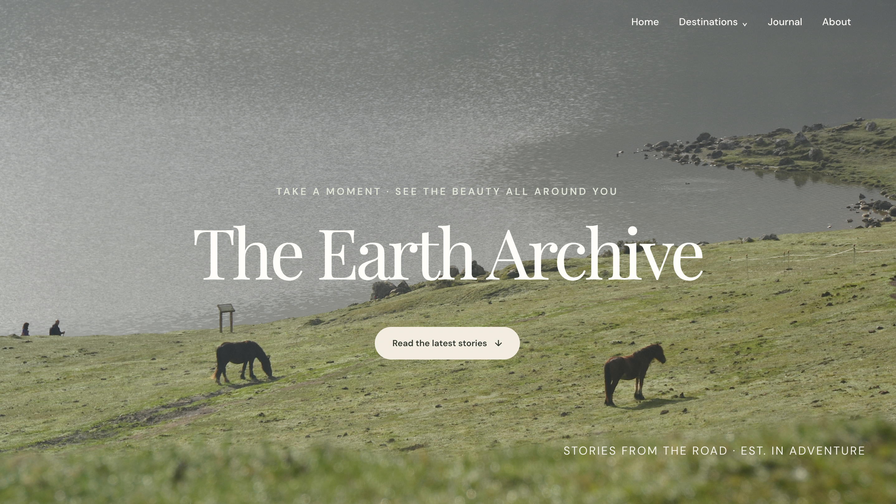
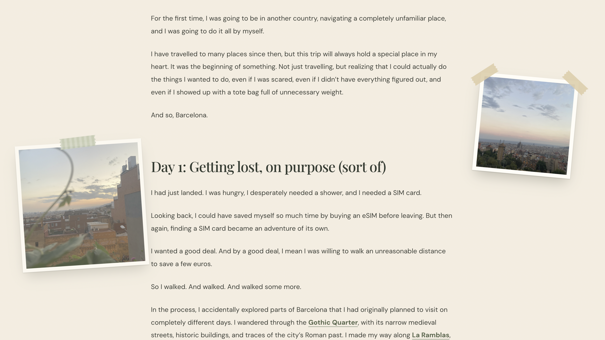
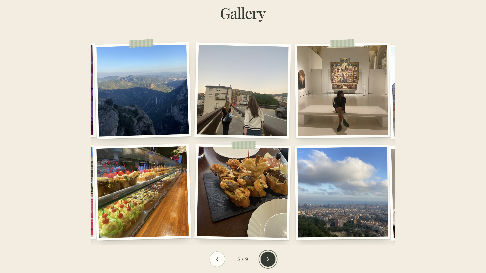

case study · 2026
The Earth Archive
A travel blog I designed and built from scratch to collect stories from my trips, from my first solo week in Barcelona to puffins in Newfoundland. I wanted it to feel less like a website and more like flipping through a travel journal.
- My role
- Designer & developer
- Tools
- Astro, HTML, CSS, JavaScript, Vercel
- Timeline
- 2 weeks

The goal
I'd been on trips to Spain, Sri Lanka, Guatemala, Portugal, Morocco and around Canada, and the stories were scattered across my camera roll. I wanted one home for them: a place that was easy to read, simple to add new trips to, and that felt personal rather than like a template.
Designing the feel
I chose a calm forest, sage and cream palette to match the outdoorsy, reflective tone of the writing, with Playfair Display for headings and DM Sans for easy reading. I designed a custom homepage with a "Latest Adventures" list of trips, and a dropdown menu that groups stories by region: Europe, Asia, the Americas and Africa.
For the post pages, I wanted photos to feel like they'd been taped into a journal. Photos sit tilted and at different sizes beside and behind the text, fading as you scroll, with a full gallery at the end of each story.

Building it
I built the site with Astro, which let me write each trip as its own post while reusing one homepage and one blog post layout across all of them. Adding a new trip is as simple as writing a new post and dropping its photos into a folder. The site is hosted on Vercel and updates automatically whenever I push changes.

The result
The Earth Archive is live with seven stories so far, from Halifax and Newfoundland to Asturias, Lisbon, Madeira and Morocco, Guatemala, Sri Lanka and Barcelona.